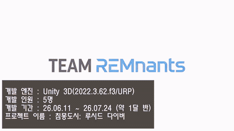
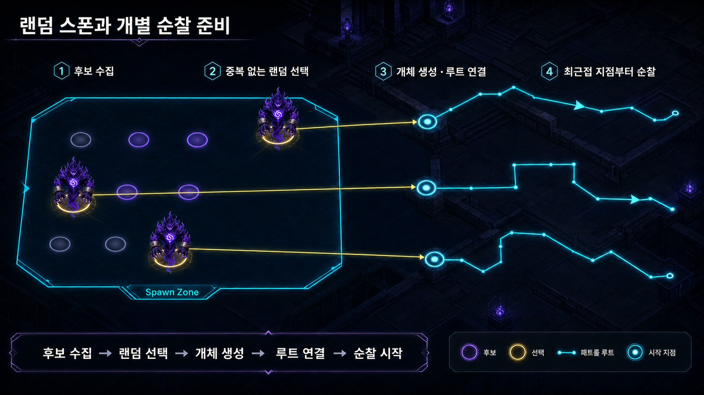
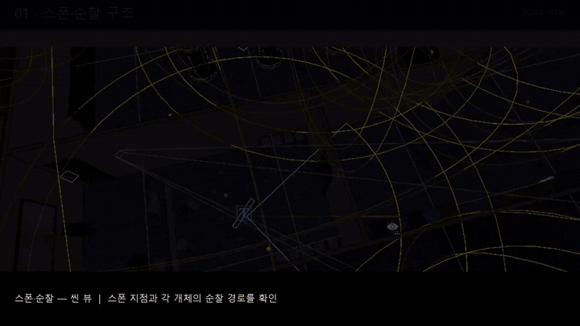
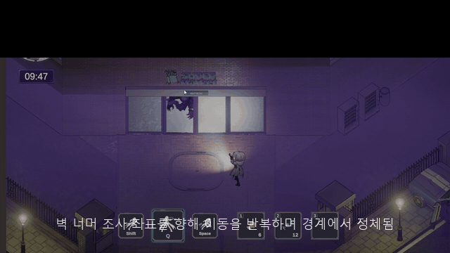
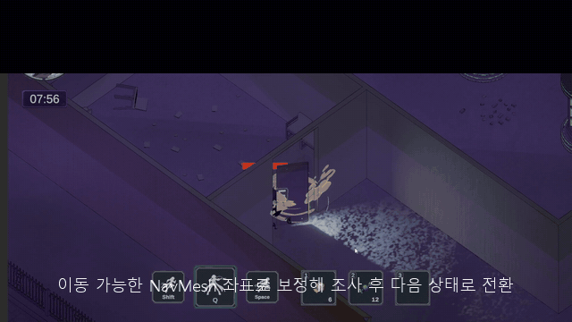

최종 시연 영상
팀 프로젝트의 게임 루프와 최종 구현 범위를 한 번에 확인합니다.
Team REMnants · Final Build
서브컬처 캐릭터 애착 요소와 PvE 익스트랙션의 전투·파밍·탈출 루프를 결합한 아이소메트릭 액션 게임
저는 이 프로젝트에서 PM 업무와 기획·개발 업무를 병행했습니다. 일정과 협업 흐름을 관리하는 한편, 별도의 기획자·개발자 역할로 꿈식자의 컨셉과 AI를 설계하고 구현했습니다.

01 · Final Result
초기 P0 검증에 머물지 않고 전투·파밍·탈출, 결과 정산, 튜토리얼, 적 AI까지 연결한 최종 빌드를 완성했습니다. 전체 시연 영상과 대표 구현인 꿈식자 AI 영상을 통해 실제 플레이 결과를 먼저 확인할 수 있습니다.
팀 프로젝트의 게임 루프와 최종 구현 범위를 한 번에 확인합니다.
랜덤 순찰, 감지, 조사, 추격, 2단 돌진 공격, 재탐색과 복귀가 이어지는 동작을 보여줍니다.
02 · Contribution
PM은 일정과 협업을 운영한 별도 트랙이며, 꿈식자 AI는 기획자·개발자로서 수행한 작업입니다. 역할을 섞어 표현하지 않고, 각 위치에서 어떤 결과를 만들었는지 구분했습니다.
팀이 같은 우선순위와 일정을 바라보도록 업무 지도를 운영했습니다.
익스트랙션 장르 안에서 적이 플레이어를 실제로 사냥하는 존재가 되도록 설계했습니다.
컨셉을 실제 플레이에서 읽히는 상태와 피드백으로 구현했습니다.
PM이기 때문에 AI를 만든 것이 아니라, PM 업무를 병행하면서 별도의 기획자·개발자 역할로 꿈식자를 설계하고 구현했습니다.
03 · Representative Work
꿈식자를 단순한 이동 장애물이 아니라 악몽 속을 돌아다니며 플레이어의 꿈을 먹는 포식자로 정의했습니다. 그래서 기본 적이더라도 2~3마리가 서로 다른 경로로 배회하고, 감각 정보를 바탕으로 조사와 추격을 이어가며, 놓친 뒤에도 재탐색과 개별 복귀를 수행하도록 설계했습니다.
Worldview → Behavior → Experience
테스트용 더미 에너미를 기초로 삼아 실제 제작용 FSM을 설계하고 구현했습니다. 스폰 포인트와 패트롤 루트를 기반으로 움직이되 NavMesh 위 임의 지점을 선택해 매번 다른 순찰선을 만들고, 시야나 소리로 플레이어의 흔적을 얻으면 조사·추격·공격으로 상태를 전환합니다.
Design Reasoning
상태 목록보다 먼저, 왜 이런 행동이 필요한지를 정의했습니다.
맵을 배회하는 장애물이 아니라, 악몽 속에서 사람의 꿈을 감지하고 먹기 위해 사냥하는 존재로 정의했습니다.
플레이어가 전투 여부와 탈출 경로를 계속 판단하도록, 한 지점을 지키는 적보다 경로를 바꾸며 추적하는 적이 필요했습니다.
개별 능력은 단순하게 유지하되 2~3마리가 다른 순찰선과 접근 지점을 사용해 공간과 퇴로를 함께 압박하도록 했습니다.
시야·소리라는 명확한 근거로 반응하고 공격에는 전조를 주되, 발견한 뒤에는 조사·재탐색까지 이어져 쉽게 포기하지 않게 했습니다.
01 · SPAWN
스폰 포인트에 연결된 패트롤 루트를 각 개체의 기준 경로로 저장하고, 2~3마리가 서로 다른 순찰을 시작합니다.
스폰 직후 같은 좌표로 뭉치지 않도록 개체별 시작 위치와 루트 기억을 분리합니다.


Interactive Portfolio
순찰부터 복귀까지 각 상태를 선택하면 로직 설명, 시각 자료, 실제 플레이 GIF와 구현 근거를 확인할 수 있습니다.
04 · Troubleshooting
Notion의 코드 변경 기록과 Unity 현재 스크립트를 교차 검증했습니다. 각 사례에서 문제·원인·수정 판단·Before/After를 확인하고, 관련 스크립트 버튼을 누르면 실제 전체 코드를 열람할 수 있습니다.
CASE 01 · ENEMY INVESTIGATE


05 · PM Work Map
전체 일정표에서 이번 주 목표를 정하고, 이를 다시 일별 실행 항목으로 내렸습니다. 팀원의 일일 개발일지와 제가 작성한 주간 개발일지를 연결해, 현재 위치와 다음 작업을 누구나 확인할 수 있는 구조를 목표로 했습니다.
프로젝트 기간, 마감, 통합·QA 시점을 한 축에 배치해 큰 방향을 공유했습니다.
이번 주에 반드시 끝내야 할 기능과 이월 항목, 블로커를 정리했습니다.
팀원별 실행 작업과 결과를 기록하고 주간 개발일지로 다시 묶어 업무 공유를 이어갔습니다.
06 · Supporting Work
대표 사례는 꿈식자 AI지만, 플레이어가 게임을 이해하고 루팅 결과를 확인하는 과정도 구현했습니다. 기획 소유와 구현 소유가 다른 경우에는 원 기획자를 분명하게 표시했습니다.
Tutorial Runtime
우성혁 CD와 장수영 CP의 튜토리얼 기획을 기준으로 JSON 데이터, 단계 진행, 조건 확인, 안내 UI와 TutorialScene 흐름을 실제 런타임에 연결했습니다.
Gameplay Connection
07 · Ownership
포트폴리오의 설득력은 많이 했다는 표현보다 어디까지 책임졌는지 명확히 보이는 데서 나온다고 생각합니다. 직접 담당, 협업, 초안, 원 기획 기반 구현을 구분했습니다.
Direct Ownership
Collaboration & Drafts